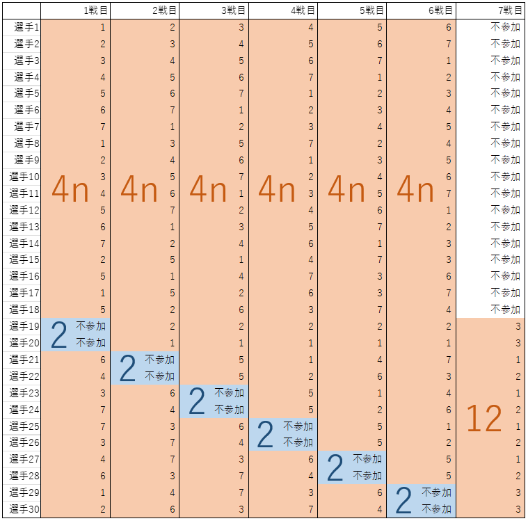
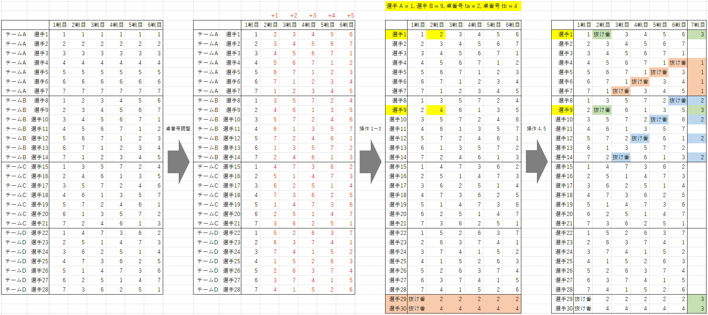

抜け番あり 1 人 6 戦、合計 7 戦 卓組作成方法
条件
- 4n + 2 人の選手がいる。
- 試合枠を 7 戦分設定する。
- 各選手は、そのうちの丁度 6 回に参加する。
- 最初の 6 戦は、それぞれについて、2 人が参加せず、その他の 4n 人が参加し、n 卓で行う。
- 最後の 1 戦は、不参加を経験した 12 人が参加し、3 卓で行う。
- どの選手も、同じ相手と複数回同卓しない。
30 人 (n = 7) の例

方法
以下の条件を満たす卓組を用意します。
- n 卓の 4 チーム戦の (どの選手も同じ相手と複数回同卓しない) 卓組 6 戦分である。
- 同じ卓を複数回使用する人がいない。
- 別のチームに所属しており、かつ同卓しない 2 選手 (A, B) のペアが存在する。
5 卓以下の場合は条件 1 を満たせず、6 卓の場合は条件 1, 3 を同時には満たせないため、7 卓以上で考えます。
7 卓以上である場合、4チーム戦 卓組作成方法で作った卓組の任意の 6 戦が条件 1, 3 を満たしています。
条件 2 を満たすためには、リンク先の ① で作ったものを使う場合は、全員の卓番号を、2 戦目は +1、3 戦目は +2、4 戦目は +3
とずらすことでうまくいきます。
② で作ったものを使う場合は、6 戦の抜き出し方や、各対戦の卓番号のずらす数をプログラムで全探索すると、うまく調整できます。
その後、以下の操作を行います。
- 別のチームに所属しており、かつ同卓しない 2 選手 (A, B) のペアを見つける。
- A, B の所属チーム番号をそれぞれ teamA, teamB とする。
- s を 2 ～ 6 から一つ選び、s 戦目の A, B の卓番号をそれぞれ takuA, takuB とする。
-
以下の条件をすべて満たす場合、卓組を構成できるので次に進む。そうでない場合、別の s を試す。どの s でも上手くいかない場合、2 選手 (A, B)
を選び直す。
- 選手 A が 2 ～ 6 戦目で takuB を使用しない。
- 選手 B が 2 ～ 6 戦目で takuA を使用しない。
- 4 チーム戦の卓組の末尾に 2 人を付け足す (これで合計が n 人になる)。
- 付け足した 1 人目の 1 戦目を「抜け番」とし、2 ～ 6 戦目に takuA を記入する。
- 付け足した 2 人目の 1 戦目を「抜け番」とし、2 ～ 6 戦目に takuB を記入する。
- 以下をすべて「抜け番」に書き換える。
- teamA チーム目の全ての対戦の 2 ～ 6 戦目の takuA
- teamB チーム目の全ての対戦の 2 ～ 6 戦目の takuB
- 卓組の右に 1 戦を付け足し、抜け番を経験した選手に、以下のように記入する。
- A, B, 付け足した 2 人の合計 4 人に「卓番号 3」を記入する。
- 残る teamA チーム目の選手 4 人に「卓番号 1」を記入する。
- 残る teamB チーム目の選手 4 人に「卓番号 2」を記入する。
この操作で目的の卓組が必ず見つかる (=「どの (A, B) や s を選んでも操作 4 の条件を満たせない」現象に陥らない) ことは証明できていませんが、
当サイトに掲載している 4 チーム戦の卓組に上記の操作を行った場合、7 ～ 30
卓のすべてで目的の卓組を見つけることができました。
下の画像は、7 卓 30 人の場合の例です。
選手 A = 15, 選手 B = 20, 対戦 s = 6 を選んだときに目的の卓組となりました。
そのとき、teamA = 3, teamB = 4, takuA = 2, takuB = 1 でした。

補足
-
当サイトに掲載している卓組は、上記の方法で作成した後に、以下の操作を複数回行っている場合があります。
- 卓番号の入れ替え (例: 1 戦目の卓番号 1 を 2 に、2 を 3 に、3 を 1 に全て書き換えている)
- 選手番号の入れ替え
- 対戦番号の入れ替え
- 今後、それぞれの手法のソースコード (Python) とその実行時間を掲載する予定です。
卓組一覧「抜け番あり 1人6戦 合計7戦」へ戻る